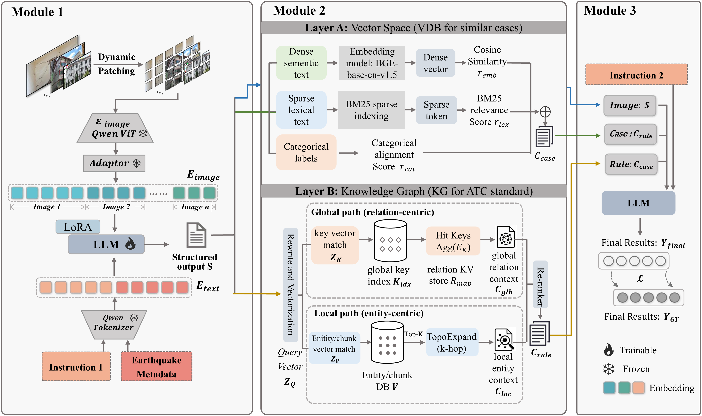

Visual perception
A domain-finetuned multimodal model reads the case’s images and earthquake metadata to extract a structured perceptual profile.
Advanced Engineering Informatics 2026
SeisMLLM
1 The University of Hong Kong
2 Tsinghua University
* Corresponding author
From multi-view damage evidence to engineering-grounded safety evaluation.
The research
Rapid post-earthquake building safety evaluation is critical for disaster response and recovery. Manual inspections require substantial time and expertise, while general-purpose multimodal large language models lack the seismic engineering knowledge needed to connect visible damage to safety judgments.
We introduce SeisMLLM, a dual-retrieval augmented framework that separates visual perception from safety evaluation. A domain-finetuned multimodal model extracts structured evidence from multi-view building images. Two complementary retrieval paths then supply similar historical damage cases and regulatory decision logic from ATC-20-1. These sources support the generation of a structured safety assessment with an explicit reasoning trace.
The accompanying SeisMLLM-1K dataset organizes earthquake imagery and assessment annotations at the building-case level. Experiments reported in the paper demonstrate improved safety-posting accuracy over representative open-source multimodal baselines. The framework is designed to support engineers in reviewing the evidence and reasoning behind post-earthquake assessments.
How it works
A perception–judgment pipeline, supported by two complementary sources of knowledge.
A domain-finetuned multimodal model reads the case’s images and earthquake metadata to extract a structured perceptual profile.
Historical-case retrieval provides comparable damage evidence. Knowledge-graph retrieval provides relevant ATC-20-1 assessment criteria.
The model combines the observed evidence and retrieved context to produce damage-condition judgments, a reasoning trace, and a safety posting.

The dataset
Building cases, with evidence from multiple views.
The dataset pairs multi-view earthquake imagery with event metadata and structured building assessment annotations. Its case-level organization supports research into damage understanding and safety evaluation.
Explore the dataset on GitHubReported in the paper
Model comparisons, multi-view case studies and an example assessment report.
Reported accuracy of SeisMLLM on the paper’s evaluation.
Over representative open-source multimodal baselines, as reported in the paper.
Values transcribed from the accompanying paper. Bold marks the best value within each displayed table. Blue rows identify SeisMLLM variants. On small screens, swipe a table horizontally to see all columns.
The full framework combines domain fine-tuning with historical-case and ATC-20-1 retrieval.
| Method | Params | DC accuracy (%) ↑ | BLEU-4 ↑ | METEOR ↑ | ROUGE-L ↑ | SP accuracy (%) ↑ |
|---|---|---|---|---|---|---|
| LLaVa-Next-8B | 8B | 31.78 | 5.56 | 12.32 | 12.42 | 9.30 |
| Deepseek-VL-7b-chat | 7B | 12.02 | 4.33 | 14.91 | 14.97 | 14.32 |
| InternVL-3.5 | 8B | 26.98 | 7.73 | 23.53 | 24.83 | 23.81 |
| QwenVL-7B | 7B | 38.10 | 6.42 | 20.26 | 21.77 | 63.25 |
| SeisMLLM w/o retrieval | 7B | 55.65 | 6.16 | 16.68 | 15.94 | 58.60 |
| SeisMLLM (Ours) | 7B | 56.45 | 6.29 | 32.92 | 37.95 | 66.13 |
DC = Damage Conditions; SP = Safety Posting. BLEU-4, METEOR and ROUGE-L evaluate generated judgment text and retain the paper’s reported scale. Higher is better in all metric columns.
Case-level understanding spans inspection scope, building attributes and visual descriptions.
| Method | IS accuracy (%) ↑ | PO accuracy (%) ↑ | CT accuracy (%) ↑ | SN accuracy (%) ↑ | SID ROUGE-L ↑ | CDD ROUGE-L ↑ |
|---|---|---|---|---|---|---|
| LLaVa-Next-8B | 39.52 | 53.49 | 30.23 | 60.48 | 28.93 | 26.10 |
| Deepseek-VL-7b-chat | 52.42 | 32.80 | 8.20 | 9.95 | 23.72 | 17.26 |
| InternVL-3.5 | 55.65 | 17.47 | 34.92 | 61.29 | 22.34 | 27.75 |
| QwenVL-7B | 83.87 | 52.42 | 41.27 | 69.89 | 31.55 | 32.72 |
| SeisMLLM (Ours) | 84.14 | 57.26 | 47.58 | 70.70 | 34.44 | 45.75 |
Selected columns from Table 4; the paper includes the full descriptive metrics. IS = Inspection Scope; PO = Primary Occupation; CT = Construction Type; SN = Story Numbers; SID = Single Image Description; CDD = Case Damage Description, using the paper’s terminology.
A GPT-guided rubric evaluates damage correctness, alignment with ATC criteria and reasoning faithfulness.
| Method | Damage correctness ↑ | ATC consistency ↑ | Reasoning faithfulness ↑ |
|---|---|---|---|
| LLaVa-Next-8B | 0.383 | 0.449 | 0.338 |
| Deepseek-VL-7b-chat | 0.340 | 0.368 | 0.287 |
| InternVL-3.5 | 0.453 | 0.521 | 0.417 |
| QwenVL-7B | 0.556 | 0.641 | 0.544 |
| SeisMLLM (Ours) | 0.568 | 0.653 | 0.569 |
Scores are normalized to [0, 1] under the paper’s evaluation rubric. These are GPT-guided report scores, with higher values indicating better rubric alignment.
Both retrieval paths improve safety-posting accuracy over the fine-tuned backbone without retrieval.
| Configuration | Similar cases | ATC-20-1 | DC accuracy (%) ↑ | BLEU-4 ↑ | METEOR ↑ | ROUGE-L ↑ | SP accuracy (%) ↑ |
|---|---|---|---|---|---|---|---|
| Base model | — | — | 55.65 | 6.16 | 16.68 | 15.94 | 58.60 |
| Similar-case retrieval | ✓ | — | 56.18 | 5.56 | 32.10 | 37.57 | 63.98 |
| ATC-only retrieval | — | ✓ | 55.91 | 5.78 | 30.54 | 33.43 | 61.29 |
| Full model | ✓ | ✓ | 56.45 | 6.29 | 32.92 | 37.95 | 66.13 |
Base model = domain-finetuned backbone with both retrieval paths disabled. ✓ indicates an enabled component; — indicates a disabled component. Full model combines both paths.
End-to-end structured report generation, measured per building case on a single NVIDIA RTX PRO 6000 (96 GB).
| Method | Params | Latency (s / case) ↓ | Throughput (tokens / s) ↑ |
|---|---|---|---|
| Deepseek-VL-7b-chat | 7B | 10.85 | 156.42 |
| LLaVa-Next-8B | 8B | 11.95 | 132.18 |
| InternVL-3.5 | 8B | 12.53 | 125.77 |
| QwenVL-7B | 7B | 10.31 | 168.29 |
| SeisMLLM w/o retrieval | 7B | 10.42 | 164.50 |
| SeisMLLM · similar cases | 7B | 12.77 | 124.40 |
| SeisMLLM · ATC only | 7B | 14.31 | 110.82 |
| SeisMLLM · full model | 7B | 14.40 | 110.15 |
Latency includes end-to-end generation of a comprehensive structured JSON report. Lower latency and higher throughput are better. The full model includes the overhead of both retrieval paths and multi-stage reasoning.
From multi-view evidence to three safety postings. These Nepal examples come from the paper’s zero-shot case study; each displayed prediction matches its ground-truth posting.
Select a photograph to open the original image. Expand the assessment notes to see the evidence behind each posting.
Small cracks in the masonry infill, with minor or no damage in the other observed conditions.
The example retains an Inspected posting because the visible damage is limited and no severe hazard is identified in the paper’s assessment.
Moderate wall / racking damage, with visible cracks across the available views.
Wall / structural damage (C3) is Moderate. Ground / slope movement (C5) is Not visible; the other four conditions are Minor/None. The paper links the moderate damage to a Restricted Use posting.
Partial masonry infill collapse, severe cracking and detached elements that pose falling hazards.
Collapse / off-foundation (C1), wall / structural damage (C3) and falling hazards (C4) are rated Severe. The paper links these conditions to an Unsafe posting.
Jiuzhaigou earthquake · 8 August 2017 · Mw 7.0 · Sichuan, China. The same five views lead to different structural interpretations and safety postings.
Baseline model
Interprets the visible cracks as localized infill damage, underestimating the wall damage in this example.
Restricted Use (Yellow)Does not match the ground-truth Red posting
SeisMLLM
Connects diagonal cracking and spalling in the walls to a Severe condition rating and an Unsafe posting.
Unsafe (Red)Matches the ground-truth Red posting
The example also retains a perception error: SeisMLLM rates building / story leaning as “Not visible”, whereas the ground-truth rating is Minor/None.
Explore the assessment reportExample assessment report
Model outputs displayed in Figures 9–10, reorganized for reading.
| Condition | Model rating |
|---|---|
| C1 Collapse, partial collapse or off foundation | |
| C2 Building or story leaning | |
| C3 Racking / wall or other structural damage | |
| C4 Chimney, parapet or other falling hazards | |
| C5 Ground / slope movement or cracking | |
| C6 Other hazards |
Visible evidence. Diagonal and vertical wall cracks, with spalling and detached plaster across the exterior and interior views.
Judgment. The model identifies severe wall damage (C3) and applies the ATC-20 criteria to reach an Unsafe (Red) posting. This matches the paper’s ground-truth safety posting.
Remaining mismatch. The leaning condition (C2) is “Not visible” in the model output and Minor/None in the ground truth.
Website transcription of fields shown in the paper, with a paraphrased reasoning summary. This excerpt is not a raw inference export or a dataset schema definition.
{
"source": {
"paper_doi": "10.1016/j.aei.2026.105126",
"figures": [
9,
10
],
"format": "Website transcription of displayed fields; not a raw inference export"
},
"earthquake": {
"name": "Jiuzhaigou Earthquake",
"date": "2017-08-08",
"magnitude": "Mw 7.0",
"location": "Sichuan Province, China"
},
"inspection_scope": "Exterior and interior",
"primary_occupation": "Dwelling",
"construction_type": "Confined masonry",
"stories": {
"above_ground": 1,
"below_ground": null
},
"damage_conditions": [
{
"condition": "C1",
"description": "Collapse, partial collapse or off foundation",
"model_rating": "Minor/None"
},
{
"condition": "C2",
"description": "Building or story leaning",
"model_rating": "Not visible"
},
{
"condition": "C3",
"description": "Racking / wall or other structural damage",
"model_rating": "Severe"
},
{
"condition": "C4",
"description": "Chimney, parapet or other falling hazards",
"model_rating": "Minor/None"
},
{
"condition": "C5",
"description": "Ground / slope movement or cracking",
"model_rating": "Minor/None"
},
{
"condition": "C6",
"description": "Other hazards",
"model_rating": "Minor/None"
}
],
"safety_posting": "Unsafe (Red)",
"ground_truth_safety_posting": "Unsafe (Red)",
"reasoning_summary": "The model identifies severe wall damage from diagonal cracks and spalling, and links condition C3 to an Unsafe posting using ATC-20 criteria.",
"comparison_note": "The model rates C2 as Not visible; the paper marks this as a disagreement with ground truth (Minor/None)."
}Source: Ma et al. (2026), Figures 9–10 ↗. Photographs above are extracted from the paper’s figures; explanatory text is condensed for this page.
Explore the project
Advanced Engineering Informatics · 2026 · Article 105126
Code release is being prepared. The repository is currently private.
Multi-view building cases, earthquake metadata, and assessment annotations.
Model weights will be linked here when released.
Reference
If you use SeisMLLM in your research, please cite our paper.
@article{ma2026seismllm,
title = {A dual-retrieval augmented Multimodal Large Language Model
framework for automatic post-earthquake building safety evaluation},
author = {Ma, Yixuan and Jiang, Jun and Wang, Shuo and Liu, Jiahui
and Qi, Xiaojuan and Wang, Xuguang},
journal = {Advanced Engineering Informatics},
volume = {76},
pages = {105126},
year = {2026},
doi = {10.1016/j.aei.2026.105126},
url = {https://doi.org/10.1016/j.aei.2026.105126}
}